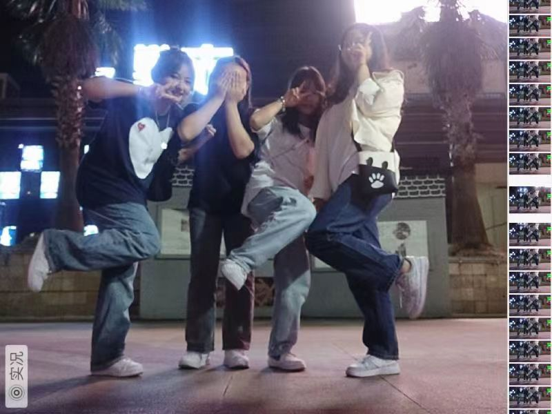

我的朋友
我的朋友 我很庆幸有一群可爱的朋友，即便我们不在同一个城市，即便我们相隔甚远，但是我们还是会给彼此千里送温暖。相对于爱情的飘渺，我更喜欢友情的实在，因为很多时候朋友之间即便不能感同身受，但是我们会彼此安慰，彼此鼓励。对于我们一般人来说，最开心的事莫过于和喜欢的人谈一场风花雪月的恋爱，和一群志同道合的朋友谈谈心，分享彼此的开心和喜悦。不管怎样，朋友总会给我们暖暖的爱意和无限的的包容。朋友之间不会因为距离而发生争执，即便我们好久不见面，也不会经常联系，但是只要一见面我们依旧如此疯闹，毫不违和。不管怎么样，我们与朋友的情谊不会因为距离而发生改变。在喧闹的城市也会有宁静的时刻，霓虹闪烁也有熄灭的时刻，最美的容颜也有衰老的一天，永远不会改变的是我们的情谊。
- 
个人介绍